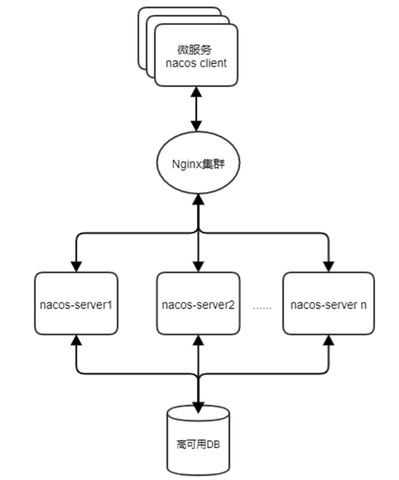

一、Nacos 简介 Nacos 致力于帮助您发现、配置和管理微服务。Nacos 提供了一组简单易用的特性集，帮助您快速实现动态服务发现、服务配置、服务元数据及流量管理。Nacos 帮助您更敏捷和容易地构建、交付和管理微服务平台。 Nacos 是构建以“服务”为中心的现代应用架构 (例如微服务范式、云原生范式) 的服务基础设施。
nacos官网：https://nacos.io/zh-cn/docs/what-is-nacos.html
二、Nacos 安装 2.1 Nacos 环境依赖 Nacos 基于 java 开发的，运行依赖于64 bit JDK 1.8+环境。
前往官网下载JDK: Java Downloads | Oracle
2.2 Nacos 服务端安装 由于Nacos是开源的，可以从github下载源码编译后安装，也可以直接从github下载官方编译好的安装包进行安装，本文直接使用官方编译好的包进行安装，基于目前官方最新release2.0.3版本。请勿使用2.x以下的版本，之前爆出过漏洞。2.x版本相对于1.x版本，性能也提升了10倍。
下载地址：https://github.com/alibaba/nacos/releases
三、Nacos 部署 3.1 集群部署 3.2.1 集群架构 
3.2.2 模拟部署
系统版本
机器IP
部署应用版本
centos7.9
192.168.1.1
mysql 5.7
centos7.9
192.168.1.1
nacos 2.0.3
centos7.9
192.168.1.1
nacos 2.0.3
centos7.9
192.168.1.1
nacos 2.0.3
四、搭建步骤 1、mysql单点部署 1 2 3 4 5 6 7 8 9 10 11 12 13 14 15 16 17 18 19 20 21 22 23 24 25 26 27 28 29 30 31 32 33 34 35 36 37 38 39 40 41 42 43 44 45 46 47 48 49 50 51 52 53 54 55 56 57 58 59 60 61 62 63 64 65 66 67 68 69 70 71 72 73 74 75 76 77 78 79 80 81 82 83 84 85 86 87 88 89 90 91 92 93 94 95 96 97 98 99 100 101 102 103 104 105 106 107 108 109 110 111 112 113 114 115 116 117 118 119 120 121 122 123 124 125 126 127 128 129 130 131 132 133 134 135 136 137 138 139 140 141 142 143 144 145 146 147 [root@tiejiang.org ~] cd /vdb/mkdir srcmv mysql-5.7.37-linux-glibc2.12-x86_64 /usr/local/mysqlcd /usr/local/mysql/;mkdir /vdb/mysql;mkdir /vdb/mysql/data;mkdir /vdb/mysql/binlogmkdir /vdb/mysql/relaylog;mkdir /vdb/mysql/logmkdir /vdb/mysql/runmkdir /tmp/mysql;touch /vdb/mysql/log/mysql.errchown -R mysql.mysql /vdb/mysql;chown -R mysql.mysql /tmp/mysql;rm -rf /usr/local/mysql/data;ln -s /vdb/mysql/data data;cd support-files/;cp mysql.server /etc/init.d/mysqld;chmod 755 /etc/init.d/mysqld;cat /vdb/mysql/log/mysql.err | grep password //查看初始化后mysql的密码'root' @'localhost' IDENTIFIED BY 'Liu180854' ;exit ;COPY
2、nacos集群部署，3台机器都要操作 1 2 3 4 5 6 7 8 9 10 11 12 13 14 15 16 17 18 19 20 21 22 23 24 25 26 27 28 29 30 31 32 33 34 35 36 37 38 39 40 41 42 43 44 45 46 47 48 49 50 51 52 mkdir /opt/srcrm -rf /opt/javaln -sf /opt/jdk1.8.0_181 /opt/javaecho 'export JAVA_HOME=/opt/java' >>/etc/profileecho 'export JAVA_BIN=$JAVA_HOME/bin' >>/etc/profileecho 'export JAVA_LIB=$JAVA_HOME/lib' >>/etc/profileecho 'export PATH=$JAVA_BIN:$PATH' >>/etc/profilesource /etc/profilecd /usr/local/src/mv nacos /usr/local/nacos-2.0.3base64 < /dev/urandom | head -c8); echo "$PASSWORD " ; echo -n "$PASSWORD " | sha256sum | tr -d '-' set names utf8; //设置字符集'nacos' @'%' IDENTIFIED BY 'Liu123456' ; //创建一个nacos的用户，并将连接设置为远程'nacos' @'%' ; //授权新用户访问nacos_config数据库的权限source /usr/local/nacos-2.0.3/conf/nacos-mysql.sql; //导入nacos的.sql文件 true &useUnicode=true &useSSL=false &serverTimezone=UTCtrue base64 秘钥
3、登陆nacos后台配置 1 2 3 http://192.168.1.2:8848/nacos/index.html
去页面中创建一个nacos的用户，密码自定义。
4、测试 1 2 该命令的username和password是登录上面网页nacos后台创建的'192.168.1.2:8848/nacos/v1/auth/login' -d 'username=yunwei&password=' yunwei123'